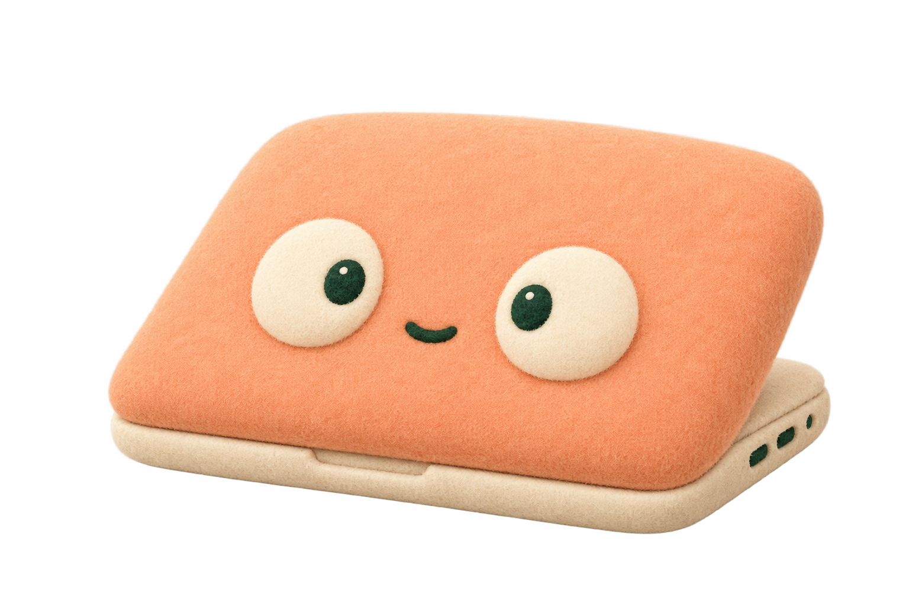

アプリを開く
アプリを開くと、メニューバーに月のアイコンが現れます。起動するだけでは電源設定を変更しません。
A LITTLE HELPER FOR YOUR MAC
長い処理も、もう少しの作業も。
スリープを防ぐ、小さなメニューバーアプリ。
充電のタイミングは、iPhoneにお知らせ。
macOS 13以降 · Apple Silicon向け検証版

オン · 起動を維持
このスイッチは表示デモです。Macの設定は変わりません。
HOW TO USE
アプリを開くと、メニューバーに月のアイコンが現れます。起動するだけでは電源設定を変更しません。
アイコンを押してスイッチをオンに。macOSの管理者認証を許可すると、太陽と「ON」の表示に変わります。
同じスイッチで戻せます。終了するときも、オフにして終了するかを選べます。オフへの変更にも認証が必要です。
9:41
Macのバッテリー残量が9%になりました。充電してください。
通知の表示イメージ
HELLO, IPHONE
Macの残量が10%を切ったら、iPhoneへ。
通知先の設定は、Macに表示するQRから始めます。
iOS 16.4以降・両端のインターネット接続が必要です。QRの読み取りだけでは登録は完了しません。購読が表示されない場合はトピックを追加してください。通知は受信確認から7日間有効です。下の「7日間」の説明も確認してください。
ntfy公式の設定手順 ↗NOTIFICATION CHECK
「ntfyを開く」とは、iPhoneのホーム画面に追加したntfyアイコンをタップすることです。Macアプリや紹介サイトを開くことではありません。ntfyのWeb通知は受信ページを1週間以上開かないとサービス側で休止され、再び開くと再開します。公式の説明 ↗
1.0.2では、受信確認から7日でMac側の自動通知を停止します。メニューバーに「⚠︎」、設定画面にオレンジ色の「通知停止中・受信確認が必要です」を表示します。初回も同じ表示です。スリープ防止の設定は変更しません。
MacはiPhoneの通知許可や実際の不達を検知できません。「⚠︎」は受信確認の期限切れを示します。期限内でも通知許可や購読を取り消すと届きません。通知を受け取るだけ、Macアプリを開くだけでは期限は延びません。
UNDER THE HOOD
管理者認証を通して、macOS標準のpmsetを実行します。5秒ごとに実際の設定を読み直し、画面に反映。パスワードは保存しません。
pmset -a disablesleep 1OFFpmset -a disablesleep 0disablesleepはAppleの公開ソースに存在しますが、一般向けマニュアルに記載されない設定です。将来のmacOSでの動作は保証できません。
30秒ごとに内蔵バッテリーを確認。バッテリー駆動中に10%未満なら、ntfy.shへHTTPSで送信します。一度送信すると、15%以上に回復するまで重複を抑えます。
通信失敗時は5〜60分間隔で再試行。サーバー受け付けとiPhoneへの到達は別です。Macアプリの終了中・スリープ中は監視できません。
PLEASE REMEMBER
ふたを閉じた場合に限らず、電源アダプタ・バッテリーの両方でスリープを無効にします。通気のよい場所で使い、バッグに収納する前には必ずオフにしてください。
トピックを知る人は受信・送信できます。QRはiPhone1台に限定するペアリングではありません。通知内容と残量は外部サービスntfyへ送信されます。端末名や管理者パスワードは送信しません。
再びアプリを開いてオフにしてください。ターミナルから sudo pmset -a disablesleep 0 でも戻せます。管理者認証が必要です。
アドホック署名のみで、Developer ID署名・Appleの公証は未実施です。他のMacでは起動が制限される場合があります。不正入力・転送防止・改ざん検知の限定的な検証も実施しましたが、ふたを閉じた実機動作とiPhoneでの受信は未確認です。
MEET YOUR LITTLE HELPER
まずは検証用アプリから。仕組みや復旧方法はREADMEにまとめています。
v1.0.3 · Apple Silicon · macOS 13以降 · 未公証の検証版